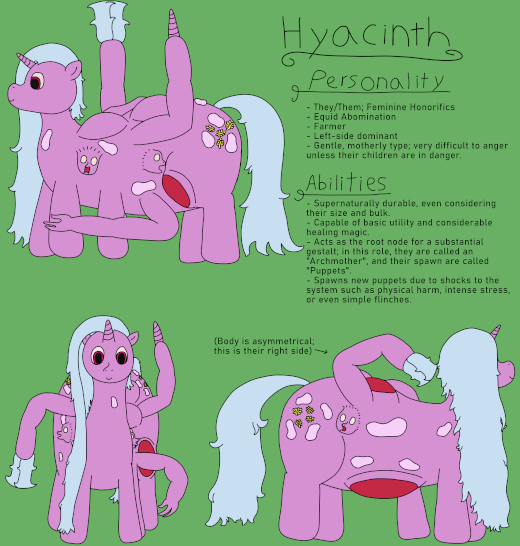

| Definition | A healthy, non-Exalted Archmother |
| Durability | ??/10 |
| Strength | Physical: 7/10 Psionic: ??/10 Magical: 6/10 |
| Specials | Puppet Spawning Organization of a Puppet Clan Spellcasting |
| Personality | Variable; leans toward parental |
Archmothers act as the root node of an entire puppet clan, whether it consists of just a handful of puppets or thousands of ouroborae. The Archmother's presence grounds and regulates the clan, ensuring puppets keep their shape and temper and preventing any organizational issues from causing undue harm. A group of Archmothers is known as a rachis or a meeting.
Reconcilants - Howitzers - Mesosae - Haulers - Hitches
A typical Archmother stands at 8' 10" (269.2cm), with a particularly heavy build to accommodate all of their internal complexity. They have a wide array of different features: Five legs support a body festooned with orifices for puppet spawning as well as side heads for managing the brain mass needed to pattern potentially dozens of types of puppets. They also have three arms, each equipped with a different tool: One having a horn for spellcasting, another having a hand, and the third having a large flange mace for self defense. This gives the Archmother all the tools it needs to start a clan, though the lack of specialization means that puppets will invariably improve the Archmother's abilities. Lastly, they have a horn on their head for spellcasting as well, providing more opportunities to cast complex magical spells at once.
An Archmother, as well as anything connected to their clan, will be
The Archmother is the core of any puppet clan, acting as the grounding force that ensures all puppets are able to effectively coordinate. Their most core trait is that of psionics and neural patterning, which allow an Archmother to host a theoretically infinite number of puppets as bodily processes are neatly patterned across clustered sets of neuron. A healthy Archmother will typically be able to adapt to any number of puppets, though there are cases of infection causing damage that creates a hard "cap" on total puppet growth.
The spawning of a puppet typically begins as the result of some sort of acute stressor: Physical pain is the most common, but being startled, or even addressed with a particularly stressful piece of news can begin the process. The impulse travels throughout the clan, often triggering spawning processes in puppets as well.
When spawning a new type of puppet, it is common for an Archmother to get "spawning sickness". Spawning Sickness is characterized by a heavily increased rate of activity in the neural mass as the body acclimates to the patterns of the new type of puppet, and manifests as a fever and a considerable amount of fatigue. Spawning Sickness' duration varies from a few hours to a month depending on the size of the new puppet, how many there are, and how long the Archmother has had to prepare.
Archmothers also produce defensive auras localized to themselves, similar to those emitted by Reconcilants. These fields greatly enhance the durability and natural healing of puppets that are close by, giving puppets near an Archmother a distinctive defensive advantage. While these fields appear magical in nature, they resist typical attempts at blocking magic, suggesting that magic is only one part of how they operate.
Archmothers, on top of their psionic abilities, also have a significant suite of spells. Most of these spells are supportive or medicinal in nature, though some can be more aggressive. A full spell list can be found below.
Being the root of all puppets, Archmothers have an unsurprising amount of dormant epigenetic triggers. However, Archmother DNA is unique in that it can change in response to various stimuli, encoding the information that gives rise to new puppet types. These triggers often develop as a response to a perceived insurmountable problem; the new puppet type becomes an "answer" to a previously unanswered (or unanswerable) question. It is believed that it would be possible to have an Archmother create any sort of puppet given enough time and conundrumical prodding, but the ethics of doing so are dubious at best.
Archmothers display a distinct suite of spells to their puppets, though some are shared amongst their puppets. Their observed spells are listed here for convenience:
I suppose I don't pay enough attention to myself as I perhaps should. I typically put my children first; I would be a poor mother if I didn't, after all. But I suppose neglecting my own well-being would begin to reflect badly on them at somepoint, given we are all bound together. In that regard, I guess I'm the most important of any of us, but somehow it hurts to even entertain that idea.
To be honest, I'm not sure what thought terrifies me more: That I might be alone in the universe, or that there's another like me, building into eternity. I'm not sure what I'd do if I met another Archmother. Perhaps it depends on the circumstances of our meeting... I would not be opposed to having another head to share the load of everything, but I also fear what might happen if we try to meld only to decide we want to break apart our union.
While Hyacinth technically already has a page, I wanted to go a bit more in-depth with the mechanical details of an Archmother and depersonalize things a bit, given how Hyacinth is a particular character rather than the entirety of their species. I've wanted to showcase Archmothers as a proper species for a while now, so here we go.
